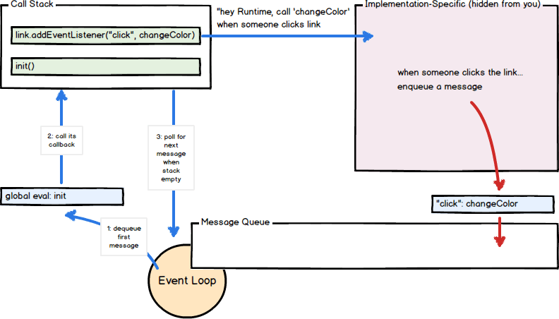
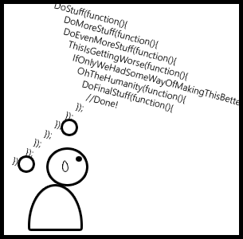

The Javascript Execution Model

JavaScript code is executed in a single thread, that is, two pieces of script cannot run at same time. Each website opened in browser gets a single thread for downloading, parsing, and executing the website which we call the main thread.
The main thread also maintains a queue, which has asynchronous tasks queued to be executed one by one - they can be event handlers, callbacks or any other kind of task.
The problem is one long running queue task can stop the execution of all other queue tasks and the main script.
However, the main thread executes the tasks of this queue whenever possible. This is what makes it possible for executing the code asynchronously.
CLICK ME
This pen displays some of the main problems of a world without promises or a library with the same method.
It's difficult to catch exceptions, as I would have to register error handling for every file I'm requesting.
The code is harder to read, it's difficult to follow the code flow due to nested function calls.
Lastly, it's difficult to maintain the state of the asynchronous operation.
define asynchronous programming:
Events are those occurring independently of the main program flow. Actions are executed in a non-blocking scheme, allowing the main program flow to continue processing.
Promises are the answer. Promises can be potentially long running and not necessarily complete operations. Instead of blocking and waiting for the long-running computation to complete, the pattern returns an object which represents the promised result.
This is obviously not the first time we have heard of promises....
Founded in 1976 by Daniel Friedman and David Wise.
Java, C#, C++, Ruby, Python, Perl, etc.
MultiLisp and Act 1
More prevalent than ever.
Promises were founded in 1976 by Daniel Friedman and David Wise.
They're used in several other languages.
Promises were first implemented in MultiLisp and Act 1.
Recently, mainstream languages have implemented support for promises due to the request–response model of message passing in the modern web and user interfaces.
So how does a Promise actually work?

The executor is executed synchronously, but the executor is executing an asynchronous operation. Therefore, the executor can return before the asynchronous operation is finished.
This is what enables us to get a resolve or reject callback, letting us handle asynchronous operations much more easily.
I know what you're thinking, let's see this in action...
ES6 / Bluebird
As you can see in both of these examples - Promises make everything a lot simpler. All files are passed into one request and from that single request, we can handle everything we need to.
Promise
// promise example
let promise = new Promise( function(resolve, reject) {});
Promises are always in one of four different states:
A promise is fulfilled if the resolve callback is invoked with a non-Promise object as an argument or no argument.
A promise is rejected if the reject callback is invoked or an exception occurs in the executor scope.
A promise is pending if the resolve or reject callback have yet to be invoked.
Finally, a promise is settled if it's either fulfilled or rejected, but not pending.
The only exception to these rules is if a Promise object is invoked with the resolve callback, then the promise object is either fulfilled or rejected depending on whehter the passed promise object is fulfilled or rejected.
then()
// then example
let promise = new Promise( function(resolve, reject) {});
promise.then(function(value) {}, function(reason) {});
The then() method of a Promise object lets us perform a task once a Promise has been fulfilled or rejected.
It takes two arguments, onFullfilled and onRejected.
onFullfilled obviously returns the value of a successful call.
onRejected similarly returns the reason for a rejection call.
The then() method always returns a new Promise object that is created internally.
catch()
// catch example
let promise = new Promise( function(resolve, reject) {});
// meh
promise.then(null, function(reason) {});
// pretty
promise.catch(function(reason) {});
The catch() method works very much in the same way as the then() method, with just one major exception:
It only takes one argument, the onRejected callback.
The catch()) method also always returns a new Promise object that is created internally.
As you can see in the code written above, the catch method is a much cleanier/easier way of catching errors rather than using the then() method.
resolve()
// resolve example
let p1 = Promise.resolve(4);
p1.then(function(value) {
console.log(value); // Output: 4
});
Promise.resolve(p1).then(function(value) {
console.log(value); // Output: 4
});
Promise.resolve({name: 'Zed'}).then(function(value) {
console.log(value.name); // Output: Zed
});
The resolve() method takes a value and return sa promise object that resolves the passed value.
This method is basically used to convert a value to a promise object.
It can prove useful when you find yourself with a value that may or may not be a promise, but you wish to use it as a Promise.
For example: jQuery Promises have different interfaces than ES6 Promises, so you can use the resolve() method to convert jQuery Promises into ES6 Promieses.
reject()
// reject example
let p1 = Promise.reject(4);
p1.catch(function(value) {
console.log(value); // Output: 4
});
Promise.reject({name: 'Zed'}).catch(function(value) {
console.log(value.name); // Output: Zed
});
The reject() method takes a value and returns a rejected promise object with the passed value as the reason.
Unlike the resolve() method, the reject() method is used for debugging purposes - not for converting values into Promises.
race()
// race example
let p1 = new Promise(function(resolve, reject) {
setTimeout(function(){
resolve("Fulfillment Value 1");
}, 1000);
});
let p2 = new Promise(function(resolve, reject) {
setTimeout(function(){
resolve("fulfillment Value 2");
}, 2000);
});
let arr = [p1, p2];
Promise.race(arr).then(function(value) {
console.log(value); // Output: Fulfillment Value 1
}, function(reason) {
console.log(reason);
});
The race method is similar to the all() method in that it takes an iterable object as the argument.
This method returns a Promise that fulfills or rjects as soon as one of the iterable objects is fulfilled.
As the name suggests, teh race() method is used to race between Promises to see which one finishes first.